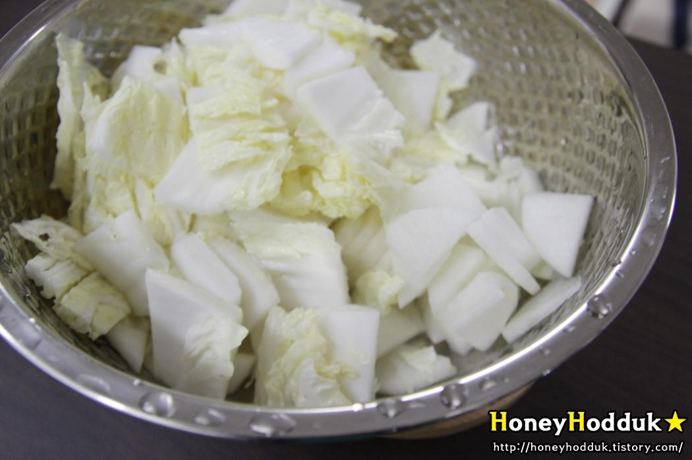
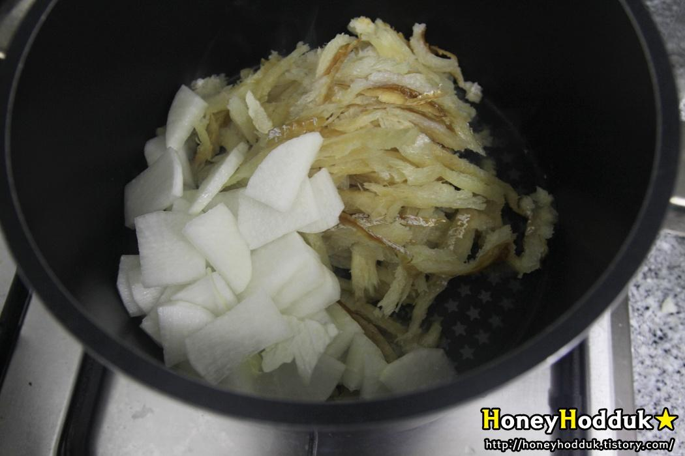
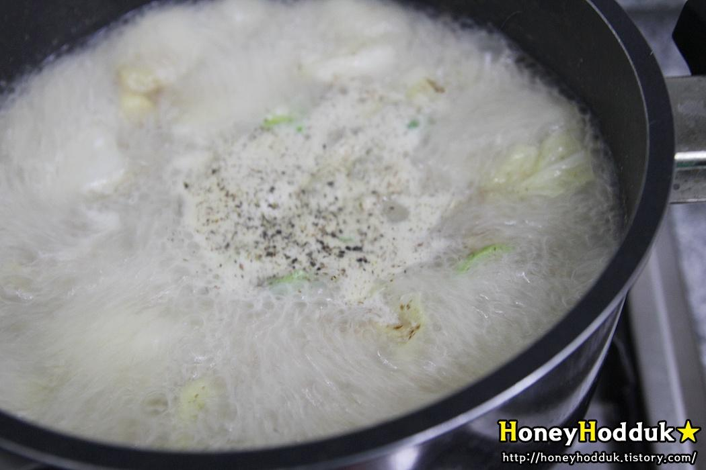
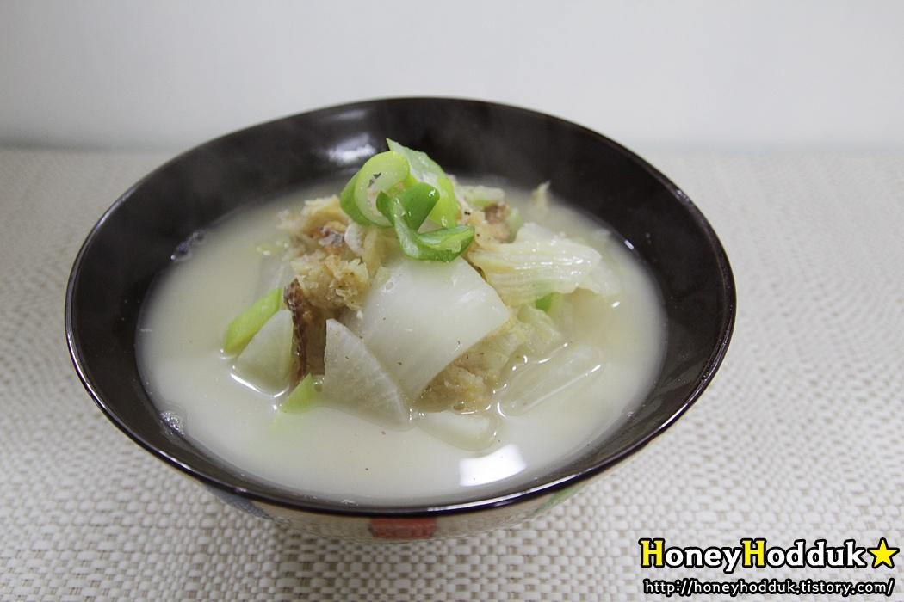

RECIPE TIP
마트에가면 다 있는 !! 다시마육수로 준비해 주세요~
(채소육수로 대체 가능)
STEP.1
황태채는 찬물에 10분간 담가 불리고
STEP.2
남아있는 가시가 없는지 꼼꼼하게 확인해 물기를 빼 준비한다

STEP.3
무와 배추는 비슷한 크기로 잘라서 준비
STEP.4
냄비에 들기름을 3스푼 두르고

STEP.5
준비한 황태채와 무를 넣고 달달 볶아준다.
STEP.6
무가 반투명해지면 육수를 넣고
뚜껑을 덮어 완전히 익을때까지 푹 끓여준다.
시간을 여유있게 가지고 끓여야 더 깊은맛이 난다.
STEP.7
무와 황태채가 완전히 익고 국물이 뽀얗게 우러나면
STEP.8
배추를 넣고
STEP.9
국간장 1스푼
STEP.10
새우젓 2/3스푼 (새우젓의 양은 입맛에 맞게 조절한다.)
STEP.11
들깨가루 2스푼 ( 들깨가루는 취향에 따라 선택한다.)
STEP.12
다진마늘 1/2스푼을 넣고 배추의 숨이 죽어
부드러워질때까지 끓여준 뒤

STEP.13
대파와 후추를 넣고 3분가량만 더 끓여주면 완성 !

STEP.14
뽀얀 국물이 사골국물을 생각나게 하는 황태무국 -
무와 배추에서 우러난 시원한 국물이 구수한 황태와 잘 어울린다.